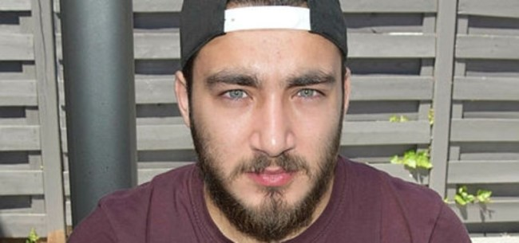
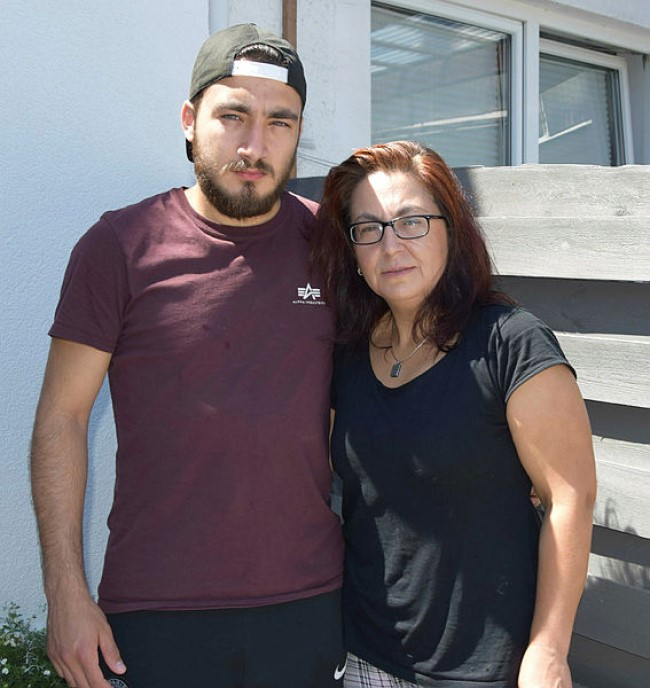

Almanya'da sağlık skandalı! 20 yaşındaki gencin hayatını karartan ameliyat
3 yıl önce Almanya'nın Bremen kentinde bir klinikte ameliyat olan, 20 yaşındaki Kerim Ramazan Uçar isyan etti. Yaklaşık 3 yıl önce gittiği klinikte yapılan ameliyatta dalağı yerine böbreğinin alındığını iddia eden Kerim Ramazan Uçar (20), ameliyatı yapan doktora karşı hukuk mücadelesini sürdürdüğünü ve adalet beklediğini söyledi.
Uçar, Bremen kentinde gazetecilere yaptığı açıklamada, kendisini ameliyat eden Alman doktorun yanlışlıkla hasta dalağı yerine sağlam böbreğini aldığını ileri sürerek, bu olaydan sonra hem bedensel ve hem de ruhsal rahatsızlık yaşadığını belirtti. Geriye dönüşü olmayan bir hata yapıldığını ve ameliyatı gerçekleştiren doktora karşı dava açtığını aktaran Uçar, "Hakkımızı aramak için başvurduğumuz hukuki yolun da yavaş işlemesiyle belirsizlik tüm aileyi etkiledi. Bu yıl içinde verilen duruşma tarihleri yeni tip corona virüs (Kovid-19) salgını nedeniyle üç kez ertelenerek ekim ayına atıldı. Dolayısıyla bugün yapılması planlanan duruşma yapılmayacak. Adalet bekliyoruz. İnşallah bir an önce duruşma yapılır." şeklinde konuştu.

"KARIN AĞRILARI ÇEKİYORUM"
Hatalı ameliyat sonrası psikolojik destek aldığını anlatan Uçar, "Ameliyat edildiğimden bu yana bir türlü geçmeyen karın ağrıları çekiyorum. En çok sevdiğim futbolu halsizliğimden dolayı artık oynayamıyorum. Spor hayatımı bitirdiler. Geleceğimi kararttılar. Resmen yarım insan oldum. Psikolojik tedavi de alıyorum." dedi. Kerim Ramazan Uçar'ın annesi Durna Uçar, yapılan operasyonda doktor hatasının gayet açık olduğunu savunarak, neden sürüncemede bırakıldıklarına anlam veremediklerini söyledi. Anne Uçar, ellerinde ameliyatın hatalı olduğuna ilişkin bilirkişi raporları bulunduğunu aktararak, "Bunların bizim lehimimize olduğunu avukatımızdan öğrendik." şeklinde konuştu.
TÜRKİYE'DE MUAYENE OLDU Karın ağrıları çeken oğlunu aralıkta Türkiye'ye götürerek muayene ettirdiğini anlatan Uçar, şöyle devam etti:
"Türk doktordan, yapılan ameliyatta oğlumun bağırsakları yanlış yerleştirildiğinden bu ağrıları yaşadığını öğrendik. Doktor, şimdilik bir onarım ameliyatının riskli olacağını söyledi. Bizi etraflıca aydınlatan Türk hekimlerinin farkını görmüş bulunuyoruz. Üzüldüğüm şey, hatalı ameliyatla bir insanın hayatı karartılıyor. Ne polis ne de savcı hamlede bulunuyor. Bremen Tabipler Birliği bile doktoru savunuyor. Bu nasıl bir adalettir. Ameliyatta doktorun yaptığı yanlışlığı ekibi de mi fark etmedi? Kim bilir kaç kişi böyle doktor hatalarına maruz kalıyor. Olayı anında Türk ve Alman basınına intikal ettirmemiz ve sürdürdüğümüz mücadele, hastane yönetimini şaşırttı. Ailece oğlumun hakkı için mücadelemizi sürdüreceğiz."